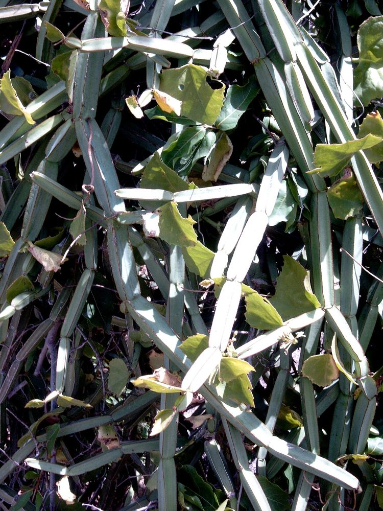

🌿 பிரண்டை – உங்களுக்குத் தெரியுமா?
1நான்கு பட்டை, கணுக்கள் நிறைந்த தண்டு
பிரண்டையின் தண்டு நான்கு பட்டைகளுடன், கணுக் கணுவாக எலும்பு போலவே தோற்றமளிக்கும். ஒரு சிறு துண்டை நட்டாலே மீண்டும் துளிர்த்து வளரும். குறைந்த நீரிலும் வாடாமல் வாழும் கொடி இது.
2"எலும்பு ஒட்டி" என்ற சிறப்புப் பெயர்
எலும்பு முறிவு, மூட்டு வலிக்குப் பாரம்பரியமாகப் பயன்பட்டதால் இதை "வஜ்ரவல்லி", "எலும்பு ஒட்டி" என்று அழைப்பர். எலும்பு போன்ற தோற்றமும், எலும்புக்கு உதவும் பயனும் இதன் தனிச்சிறப்பு.
3தொட்டால் அரிக்கும் கொடி
பச்சைப் பிரண்டையை நறுக்கினால் கைகளில் அரிப்பு ஏற்படும். அதனால் கையில் நல்லெண்ணெய் தடவிக்கொண்டு நறுக்கி, எண்ணெயில் நன்கு வதக்கிய பிறகே சமைப்பது நம் முன்னோர் வழக்கம்.
🌿 சித்த மருத்துவக் குறிப்பு:
இளம் பிரண்டைத் தண்டை நெய் அல்லது நல்லெண்ணெயில் வதக்கித் துவையலாக வாரம் இருமுறை உண்டால் பசியின்மை, செரிமானக் கோளாறு நீங்கி எலும்புகள் வலுப்பெறும் என்பது சித்தர் மரபு. (கர்ப்பிணிகள் மற்றும் மருந்து உட்கொள்பவர்கள் மருத்துவர் ஆலோசனையுடன் பயன்படுத்தவும்.)
இந்தத் தகவல் பயனுள்ளதாக இருந்ததா?